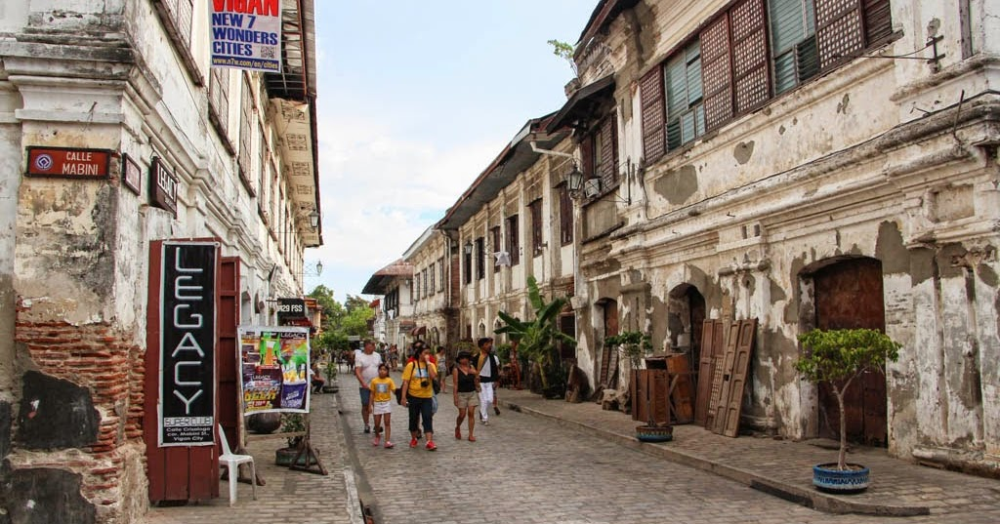

The Narrative
Why Vigan?
For an IT student, Vigan is a masterclass in "Legacy Systems." Exploring Calle Crisologo is about seeing how structures from the 16th century have stood the test of time through architectural integrity. It’s a place to reflect on building things that last—whether it's a stone house or a clean line of code.
Exploration Plan
What to Do
Walk through the cobblestone streets at sunrise to avoid the crowds, grab a traditional Vigan Empanada at the Plaza, and visit the Pagburnayan (Jar Factory). I want to document the textures of the Spanish-colonial era for my portfolio "The Yu Files," blending the old-world aesthetic with my modern digital curation.